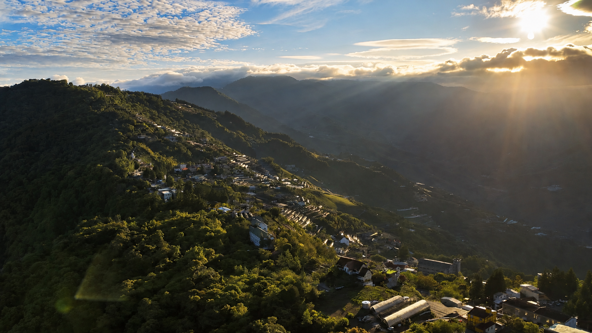
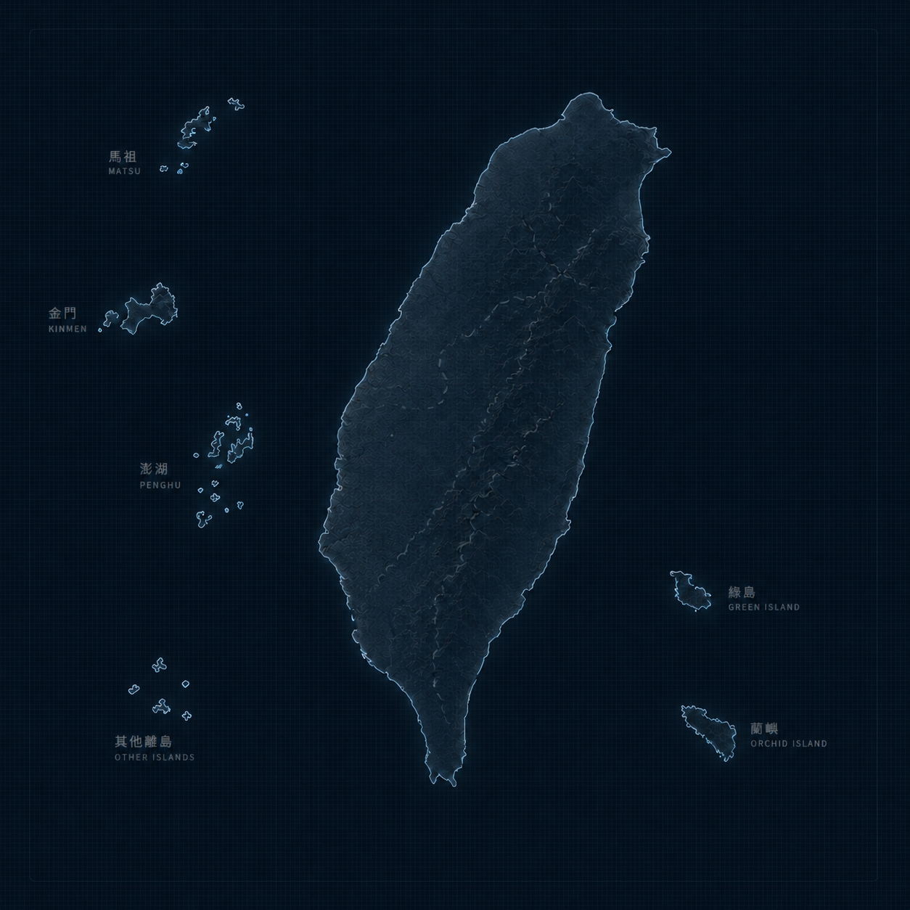
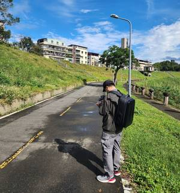
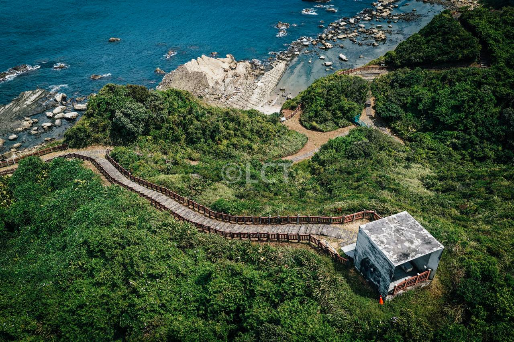
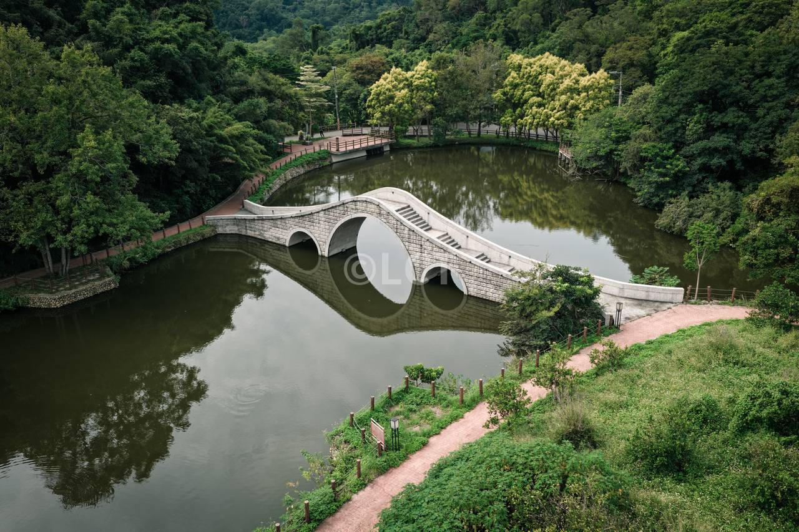

日出｜喚醒地景的第一道光
從夜幕到清晨，地貌與建築在微光中逐漸甦醒。

Sun Path / Aerial Light
從夜幕到清晨，地貌與建築在微光中逐漸甦醒。
晨光穿透翻湧的雲霧，山巒與地貌在明暗交錯中堆疊出深邃的立體感，賦予畫面極具張力的視覺層次。
光線變得溫潤柔和，生硬的亮暗落差隨之消融，每一個細節與輪廓以最細膩的姿態優雅浮現。
隨著光線溫柔收攏，場域的輪廓化作剪影，將瞬間的氛圍定格為令人過目不忘的經典。
Selected Frames
每一張照片都保留現場的尺度與方向感，讓城市、自然與工程場域能被快速理解。
City Lights
捕捉都會的幾何線條、璀璨夜色與人文脈動。
Earthscapes
記錄山川的壯麗脈絡、無垠海岸與自然紋理。
Immersive View
GPS Route
以定位資訊串連台灣周邊場域，從城市、海岸、山線到離島，看見空拍作品的拍攝足跡。
僅展示部分具定位資訊的精選作品，完整作品可於上方相簿與線上畫冊瀏覽。

GPS ROUTE
Immersive 3D Gallery
Motion Reel
用移動鏡頭補足照片之外的節奏，呈現案場動線、建築量體與自然地貌。
Commercial Use Cases
LCT Studio 可以把作品集的影像語言延伸到建案、工程進度、廠房與太陽能場域， 用清楚的視覺敘事幫客戶說明規模、效率與信任感。
以高空視角建立品牌第一印象，適合形象官網、作品集與社群主視覺。
用定期拍攝與影片剪輯呈現進度，讓業主、團隊與銷售端快速掌握現況。
凸顯基地周邊、交通動線與城市紋理，讓空間價值不只停留在平面圖。
以全區俯瞰、設備排列與廠房尺度呈現能源專案的規模與專業度。
About LCT



我是一名熱愛空拍的攝影師，喜歡用鏡頭探索天空下的一切，記錄自然的風景與城市的樣貌。
我看見人與環境的緊密關係，也希望能把那些稍縱卽逝的美好時刻，真實地留存下來。
致力於用影像說好每一個故事，透過不同角度的視野，讓人重新發現那些熟悉卻常被忽略的細節與美感。
Contact
如果您有任何專案合作或想了解更多，歡迎填寫下方的表單，我會盡快回覆您！